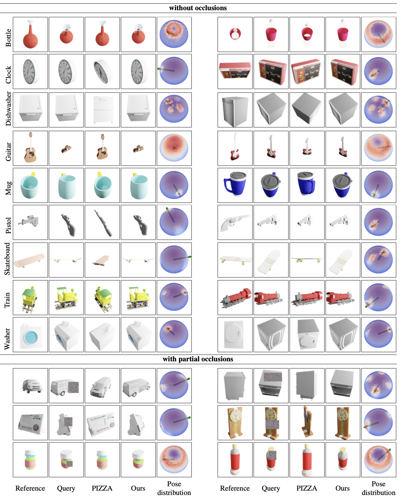

NOPE: Novel Object Pose Estimation from a Single Image arXiv 2023
Abstract
The practicality of 3D object pose estimation remains limited for many applications due to the need for prior knowledge of a 3D model and a training period for new objects. To address this limitation, we propose an approach that takes a single image of a new object as input and predicts the relative pose of this object in new images without prior knowledge of the object's 3D model and without requiring training time for new objects and categories. We achieve this by training a model to directly predict discriminative embeddings for viewpoints surrounding the object. This prediction is done using a simple U-Net architecture with attention and conditioned on the desired pose, which yields extremely fast inference. We compare our approach to state-of-the-art methods and show it outperforms them both in terms of accuracy and robustness.
Approach
Overview: During training, we train a U-Net to predict the embedding of a novel view of an object, given a reference image of the object and a relative pose. The U-Net is conditioned on an embedding of the relative pose computed using an MLP, which we train jointly with the U-Net. At inference, our method first takes as input a reference image of a new object and predicts the embeddings of views of the object under many relative poses. This inference takes around 1 second on a single GPU V100. Then, given a query image of the object, we first compute its embedding and match it against the set of predicted embeddings, which takes about 0.2s. This gives us a distribution over the possible relative poses between the reference and query images. The maximum of the distribution corresponds to the predicted pose.
Results


Overview: Visual results on unseen categories from ShapeNet. An arrow indicates the pose with the highest probability as recovered by our method. We visually compare with PIZZA, which is the method with the second best performance. We visualize the predicted poses by rendering the object from these poses, but the 3D model is only used for visualization purposes, not as input to our method. Similarly, we use the canonical pose of the 3D model to visualize this distribution, but not as input to our method.
Citation
@article{nguyen2023nope,
title={NOPE: Novel Object Pose Estimation from a Single Image},
author={Nguyen, Van Nguyen and Groueix, Thibault and Hu, Yinlin and Salzmann, Mathieu and Lepetit, Vincent},
journal={arXiv preprint arXiv:},
year={2023}}
Acknowledgements
We thank Elliot Vincent, Mathis Petrovich and Nicolas Dufour for helpful discussions. This research was produced within the framework of Energy4Climate Interdisciplinary Center (E4C) of IP Paris and Ecole des Ponts ParisTech, and was supported by 3rd Programme d’Investissements d’Avenir [ANR18-EUR-0006-02] and by the Foundation of Ecole polytechnique (Chaire “Defis Technologiques pour une Energie Responsable” financed by TotalEnergies). This work was performed using HPC resources from GENCI–IDRIS 2022-AD011012294R2.
This website takes the template from Ben Mildenhall and Michaël Gharbi.